Released on April 2, 2008
(Next Release on April 9, 2008)
Winter Fuels Wrap-Up
Despite what may have appeared as a harsh winter in some regions, actual temperatures across the Nation remained close to normal over most of the 2007-08 winter heating season. The variation in temperatures over portions of the key heating regions in the Midwest and East Coast, with some periods of mild weather and others of more severe weather, contributed to moderate overall heating fuels demand last winter. In contrast, past winters have shown that prolonged periods of extremely cold temperatures often caused significant supply disruptions.
Distillate fuel inventories, including heating oil, began the 2007-08 heating season at 134 million barrels, a level near the upper boundary of the average range at that time of year (see Figure 5, October 3, 2007 issue of Weekly Petroleum Status Report). While the overall level of distillate fuel inventories may have implied an adequate supply of heating fuels leading into winter, inventories of high sulfur distillate fuel, the product specifically identified as heating oil, were relatively low, even from the outset of winter, as discussed in the March 19, 2008 issue of TWIP. However, low sulfur distillate fuel is also used in heating markets. Over the course of last winter, distillate fuel inventories were drawn down by about 24 million barrels, slightly more than the most recent 5-year average draw of about 22 million barrels. Consequently, as of March 28, distillate fuel inventories stood at an estimated 110 million barrels, 10 million barrels below the March 2007 level, but matching the 5-year average for this month.
Another way to look at the heating fuel inventory buffer is to make comparisons in terms of days of supply. Days-of-supply are calculated by taking current inventory levels and dividing by the product supplied, or implied consumption, over the most recent four-week period. As the chart below suggests, distillate fuel inventories maintained a relatively consistent days-of-supply pattern over the heating season, varying within a narrow range of about 6 days of supply over the season. This is a fairly typical pattern for this fuel over the past several years. Since the chart only shows total distillate fuel, it does not directly address the adequacy of actual heating oil inventories, particularly in New England and Middle Atlantic regions. Although low sulfur distillate can be used in heating oil applications, high sulfur distillate, a less expensive product, is the primary fuel for such applications. Looking only at inventories of high sulfur distillate fuel for Petroleum Administration for Defense District (PADD 1), the inventory situation over the winter was much tighter. By the end of March, heating oil inventories stood at their lowest level since 2005, which may have contributed to record prices. Moreover, with winter weather expected to linger over portions of the Northeast, including New England, heating oil consumption may continue well into April.
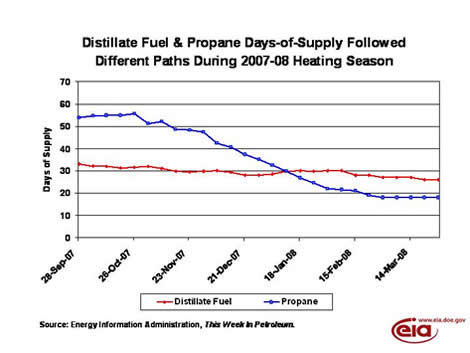
Conversely, propane inventories began the 2007-08 heating season at an estimated 58.3 million barrels, a level below the average for the start of the heating season (see Figure 7, October 3, 2007 issue of Weekly Petroleum Status Report). The level of propane inventories at that time was reported by some observers to be only marginally adequate to meet even typical winter demand. With no apparent inventory cushion, propane markets were expected to be more susceptible to the effects of severe weather, if it occurred. Likewise in the Midwest (PADD II), where most of the nation’s heating demand for propane occurs, inventories were considered unseasonably low by some, as inventories were tracking in the lower half of the average range at that time.
Fortunately, propane inventories fell by only about 33 million barrels over the winter, the smallest draw since the 2001- 2002 season. As of March 28, propane inventories stood at an estimated 25 million barrels, over 2 million barrels below both the March 2007 level and the 5-year average for this month. While propane began the heating season with 54 days-of-supply, this level was significantly reduced over the winter, falling by 36 days to end the heating season at only 18 days-of-supply. In contrast to distillate fuel, propane markets typically rely heavily on inventories to meet winter demand, which partially explains the stronger drawdown pattern. Again, looking only at the core heating region in the Midwest, inventories were drawn down to the lower boundary of the average range by the end of March, which may have contributed to record propane prices this past heating season.
Early season inventory concerns aside, both heating oil and propane supplies now seem to have been adequate in meeting demand needs last winter, although at a high cost to consumers. As discussed in the March 26 TWIP, international market pressure on distillate prices is playing a large role this year. While seasonal heating oil price pressure will be easing somewhat, strong diesel demand worldwide may keep distillate prices relatively high this summer as well.
U.S. Gasoline Prices Increase to New Record High; Diesel Prices Drop for the First Time Since Late January
Reversing the drop of last week, the U.S. average retail price for regular gasoline rose by 3.1 cents to reach a new all-time high of 329.0 cents per gallon, surpassing the previous high set two weeks earlier. Prices on a regional basis increased throughout the country. The average price on the East Coast went up by 1.5 cents to 325.6 cents per gallon, 58.5 cents higher than the price last year. The price in the Midwest increased the most of any region, going up by 5.7 cents to 324.9 cents per gallon, an increase of 63.5 cents from a year ago but still 7.7 cents below the all-time high price for the region that occurred in May of 2007. The average price in the Gulf Coast region increased 4 cents to 320.6 cents per gallon, 64.1 cents above the price a year ago. The average price in the Rocky Mountains increased by 3.4 cents to 323.2 cents per gallon, 61.3 cents higher than last year. Once again, the average price on the West Coast was the highest of any region in the country. The average price moved up by 0.6 cent, which was the smallest increase of any region. The average price increased to 352.3 cents per gallon, 42.7 cents higher than the price a year ago. The average price in California also went up by 0.6 cent to reach 360.8 cents per gallon, 38.0 cents above the price last year.
The U.S. average retail diesel price dropped for the first time since late January. The national average price of diesel fuel fell by 2.5 cents to 396.4 cents per gallon, 117.4 cents above the price last year. On a regional basis, prices decreased throughout the country with the exception of the Rocky Mountains. On the East Coast, the average price slipped by 3.1 cents to 401.4 cents per gallon, 125.0 cents per gallon higher than the price a year ago. In the Midwest, the price dropped by 3.5 cents, the largest decline of any region. The price of 392.9 cents per gallon was 114.9 cents higher than a year ago. The price in the Gulf Coast went down 2.1 cents to 390.7 cents per gallon, and remained the lowest price of any region. The Rocky Mountain region was the only region where the price increased. The price moved up by 1.9 cents to a new all-time high of 397.2 cents per gallon. On the West Coast, the average price fell by 0.7 cent, the smallest drop of any region. The average price in the region of 404.9 cents per gallon was 116.4 cents above the price last year. The average price in California also dropped by 0.7 cent, falling to 411.2 cents per gallon, 117.3 cents above the price a year ago.
March Propane Draw Above Average
The March draw on the nation’s primary supply of propane totaled nearly 4.0 million barrels, a level above the 5-year average of about 2.5 million barrels. Moreover, the last week of the traditional heating season saw propane inventories inch lower by 0.5 million barrels, reaching an estimated 24.9 million barrels as of March 28, 2008. While weekly declines were reported in the East Coast and Gulf Coast regions last week, down 0.3 million barrels and 0.4 million barrels, respectively, the Midwest and combined Rocky Mountain regions reported similar gains of 0.1 million barrels during this same time. Propylene non-fuel use inventories fell last week by 0.1 million barrels, lowering the share of this fuel to total propane inventories to 8.1 percent, compared with 8.3 percent from the prior week.
Text from the previous editions of “This Week In Petroleum” is now accessible through a link at the top right-hand corner of this page.
| Retail Prices (Cents Per Gallon) | |||||||
| 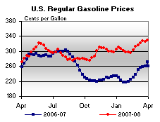 | 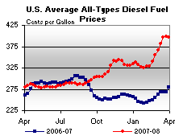 | ||||||
| Retail Data | Changes From | Retail Data | Changes From | ||||
| 03/31/08 | Week | Year | 03/31/08 | Week | Year | ||
| Gasoline | 329.0 | Diesel Fuel | 396.4 | ||||
| Spot Prices (Cents Per Gallon) | |||||||||||||||||||||||||||||||||||||||
| 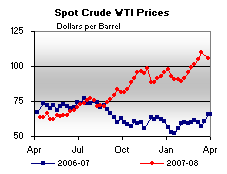 | 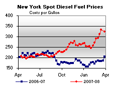 | ||||||||||||||||||||||||||||||||||||||
| 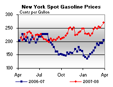 | 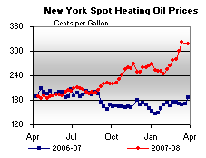 | ||||||||||||||||||||||||||||||||||||||
|
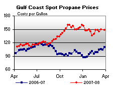 | ||||||||||||||||||||||||||||||||||||||
| Stocks (Million Barrels) | |||||||
| 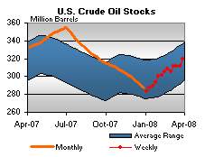 | 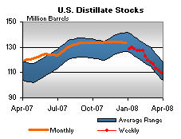 | ||||||
| 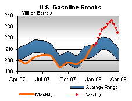 | 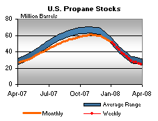 | ||||||
| Stocks Data | Changes From | Stocks Data | Changes From | ||||
| 03/28/08 | Week | Year | 03/28/08 | Week | Year | ||
| Crude Oil | 319.2 | Distillate | 109.7 | ||||
| Gasoline | 224.7 | Propane | 24.897 | ||||